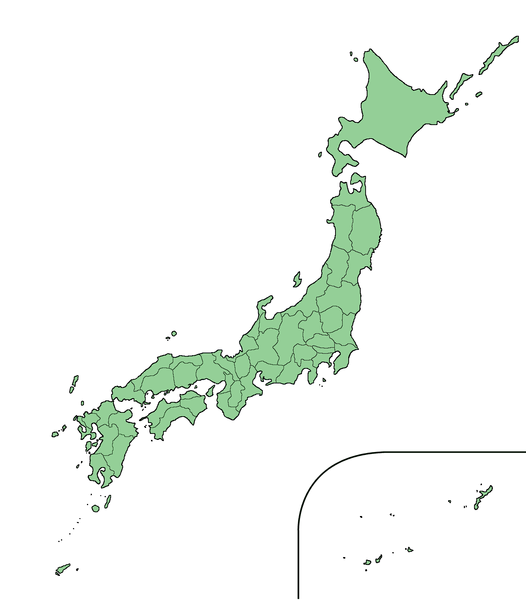
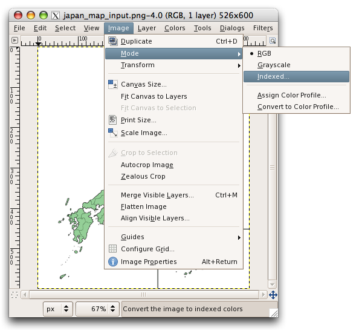
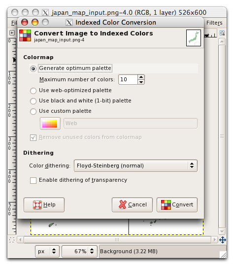
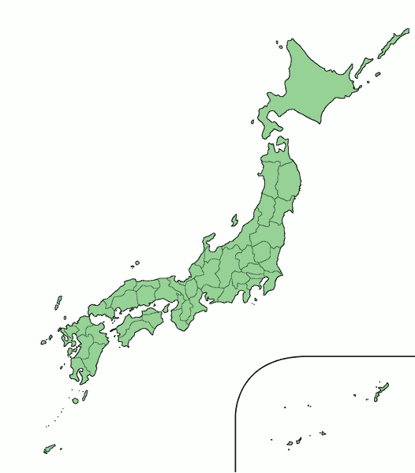

Optimizing widget graphics for mobile and devices
24th April 2012: Please note
Starting with Opera 12, Opera Widgets will be turned off for new users and completely removed in a later release. If you're interested in building addons for Opera, we recommend going with our extensions platform — check out our extensions documentation to get started.
Table of contents:
- Introduction
- Limit the amount of graphics
- Use CSS sprites
- Choose the right image format
- Optimize color depth
- PNG crushing
- A note about repeating backgrounds
Introduction
This article will explore a few simple techniques that help you optimize the graphics inside your Opera widget for mobile phones and devices with limited resources. Of course, these tips are likely to also improve the widget’s performance on desktop, albeit to a lesser extent.
Limit the amount of graphics
In general, it is a good idea to keep the number of decorative or informative images low and to use text and CSS styling where possible. Using PNG alpha-transparency for drop shadows and see-through effects may have a slight impact on performance and ultimately on the device’s battery life, especially when used in combination with animated elements, so proceed with caution.
Use CSS sprites
When navigating inside an Opera widget, graphics are sometimes loaded with a delay of a few tenths of a second. Although such a short delay may not seem like a lot, it still has a considerable impact on the user experience and makes the widget feel sluggish. Luckily enough, this delay can be largely avoided by using CSS sprites. With the CSS sprites technique, all images used in the Opera widget are combined into one “master image”—by using a smart combination of CSS positioning and width/height settings, the individual image parts can be selectively shown inside the Opera Widget, without any delay. The reason for this performance optimization has to do with the fact that the different parts in the master image are all loaded at once and they reside in memory: moving the master image to the appropriate position is less resource intensive then loading the individual images one by one.
Below you can find a CSS sprites example, showing an Opera widget with a red “front side” and a gray “back side.” Both the front div and the back div use the same background-image, but in the latter case, the image is shifted up with 300 pixels, so as to push the red rectangle out of view and show the gray one instead. The color change will be visible instantly upon clicking the “Go to backside” link. In case two separate images would have been used, the user may notice a small image loading delay when navigating to the “back side” of the Opera Widget, depending on the device’s capabilities.
<!DOCTYPE html>
<html>
<head>
<title>Background showcase</title>
<script type='text/javascript'>
function showback() {
if (document.getElementById) {
document.getElementById('back').style.display = 'block';
document.getElementById('front').style.display = 'none';
}
}
function hideback() {
if (document.getElementById) {
document.getElementById('front').style.display = 'block';
document.getElementById('back').style.display = 'none';
}
}
</script>
<style type="text/css">
h1 {font-size: 1.3em;}
#front h1 {color: #fff;}
#front a {color: #ccc;}
#back a {color: #333;}
#front {
background: transparent url(200_600_combo.png) 0 0 no-repeat;
height:260px;
width:200px;
padding: 20px;
}
#back {
background: transparent url(200_600_combo.png) 0 -300px no-repeat;
height:260px;
width:200px;
padding: 20px;
}
</style>
</head>
<body>
<div id="front">
<h1>Frontside</h1>
<a href="javascript:showback()">Go to backside</a>
</div>
<div id="back" style="display: none;">
<h1>Backside</h1>
<a href="javascript:hideback()">Go to frontside</a>
</div>
</body>
</html>
This is the image that is used—note that the two backgrounds form one single graphic.
{kind=link}
Choose the right image format
When using graphics in Opera widgets, choosing the right image format is likely to speed up the widget’s performance. It is recommended to try out which image format produces the smallest file size for a given graphic, as smaller file sizes usually perform better than big ones.
Optimize color depth
Applying posterization, dithering and color indexing algorithms on your images generally reduces file size, which often results in better performance. Although it is hard to give a winning combination of settings that invariably result in small file sizes while maintaining high visual quality, the screenshots below give an idea of a typical color indexing conversion workflow. The graphics tool being used here for screenshots is The Gimp, but Photoshop and other graphic editors allow for similar procedures.
We start off with a PNG image of about 180 KB found at the Wikimedia Commons
{kind=link}

Open the image in The Gimp and select Image:Mode:Indexed. In case Indexed is already selected, select RGB, and then try again…

Choose “Generate optimum palette” and select the maximum number of colors – in this case 10 is enough. Press Convert and save the result.

This is the image output by The Gimp: an indexed PNG (10 colors) of about 10 KB:

PNG crushing
Image editors often choose poor compression algorithms for PNGs and may include unneeded metadata. This results in larger files, which, as we said, often means longer loading times. Pngcrush and PNGOut, two PNG file optimizers, do a great job in solving this compression problem.
Pngcrush
- Pngcrush can be found at http://pmt.sourceforge.net/pngcrush/ : on the download page, search for the package ending in -win32.zip.
- Once downloaded, unpack it and move the PNG files you want to convert to the same folder.
- Open the command line, and navigate to the folder with pngcrush.exe and the PNG files in question.
- Execute
pngcrush img.png img2.pngwhere img.png and img2.png are the names of the input and output image, respectively. - Additional arguments (type
pngcrush -helpfor an overview) can be used for further optimization.
PNGOut
- PNGOut can be found at http://www.advsys.net/ken/utils.htm : search for a link called PNGOUT.EXE.
- Once downloaded to a folder, move the PNG files you want to convert to the same folder.
Open the command line, and navigate to the folder with pngout.exe and the PNG files in question.
Executepngout img.png img2.pngwhere img.png and img2.png are the names of the input and output image, respectively. - Additional arguments (type
pngout -helpfor an overview) can be used for further optimization.
A note about repeating backgrounds
We have said before that images with smaller file sizes perform better than bigger ones. However, it is recommended to proceed with caution when repeating background images along the x or y axis. In certain cases, repeating a small background image multiple times instead of using a single bigger one may negatively affect performance on the device. Therefore, it is to be expected that
#surface {background: url(5x5px.png) 0 0 repeat-all;} /* 5x5px.png is a 5 by 5 pixels PNG image */@
is slightly slower to load than
#surface {background: url(200x200px.png) 0 0 no-repeat;} /* 200x200px.png is a 200 by 200 pixels PNG image */
However, as the browser engine’s rendering behavior is dependent on a number of factors, it is recommended to test these two methods before deciding which one is ideal for the Opera Widget in question.
We hope these tips get you started. Happy optimizing!
Andreas Bovens

Andreas is based in Oslo, where he works for Opera Software as Extensions Product Manager + Developer Relations.
This article is licensed under a Creative Commons Attribution, Non Commercial - Share Alike 2.5 license.
Comments
The forum archive of this article is still available on My Opera.
No new comments accepted.